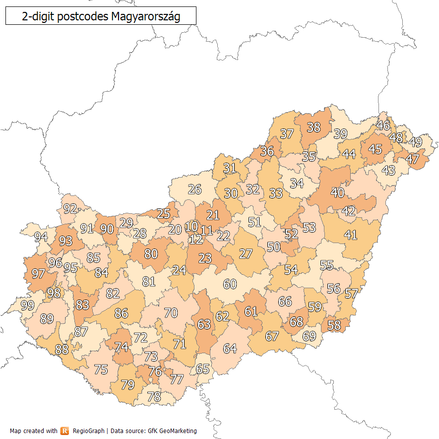

🇭🇺 Magyarország
Irányítószám-körzetek
Térkép betöltése…
A körzeti térkép nem tölthető be.
Az előző térkép megmaradt. Próbáld meg újra.

KÖRZET
8
Még nincs pontos hely
Sikeres keresés után itt jelenik meg a település OpenStreetMap-nézete.
Pontos hely betöltése…